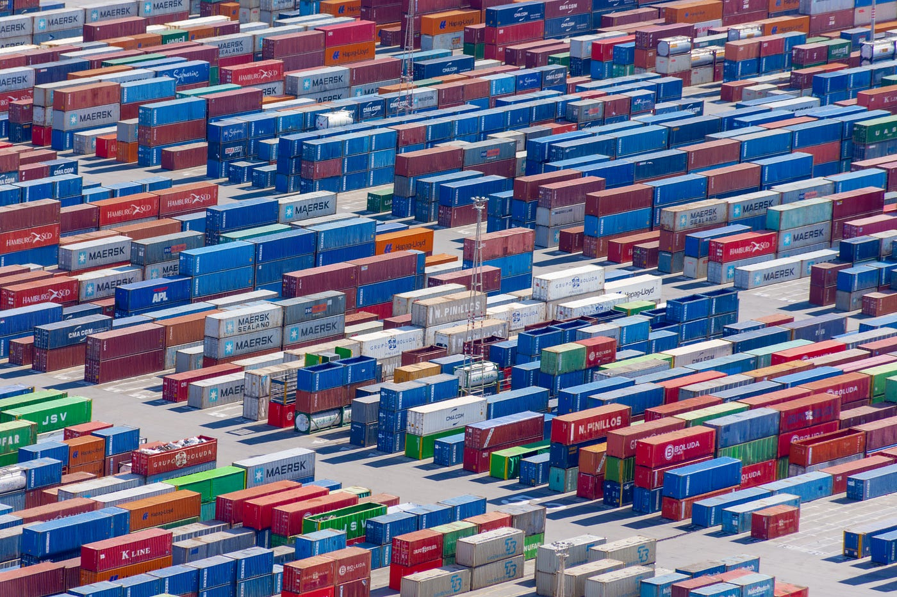

Sur une compréhension rationnelle du monde moderne…

L’une des nécessités fondamentales de notre époque réside dans la capacité à traiter le flux d’information de plus en plus volumineux mis à notre disposition. A l’échelle de notre espèce, la manière dont nous interagissons et évoluons avec notre environnement est devenue si complexe que nous avons choisi (par défaut) une manière simple de traiter l’information : recourir à ce que les scientifiques appellent des boîtes noires. Ce modèle consiste en la représentation d’un système dans son ensemble sans avoir à considérer son fonctionnement interne. Cependant, au-delà de nous faire gagner un temps considérable, ce modèle crée également chez nous un réel déficit en termes de compréhension de ce qu’il en est réellement.
Depuis 2007, plus de la moitié de l’humanité vit dans des villes (jusqu’à 80% dans les pays développés) et ceci n’est pas sans conséquences sur nos sociétés. Cele a contribué à l’apparition d’une réelle déconnexion entre les individus et la réalité des rouages qui sont à l’origine de notre production alimentaire, de matériaux ou d’énergie, indispensables au maintien de nos modes de vie actuels. Pour donner une statistique plus parlante, aux États-Unis, dont la population avoisine les 350 millions de citoyens, seulement 3 millions de personnes participent à la production alimentaire, soit moins de 1% de la population…
Pour poser les bases de ce réel déficit de connaissance à l’échelle mondiale, il convient de catégoriser la connaissance et les ressources fondamentales mais aussi les piliers importants du fonctionnement de notre espèce à l’ère moderne. Dans son ouvrage “How the World Really Works”, le scientifique Vaclav Smil tente d’ouvrir la brèche pour reprendre ces bases et proposer une explication rationnelle du monde dans lequel nous vivons.
Un cadre théorique
L’énergie
L’énergie est le premier pilier de l’univers, sur lequel repose la stabilité de l’ensemble de ce que l’on comprend (la vie, la matière…). Cependant, même pour définir cette notion de base, nous connaissons des concepts et définitions pouvant relativement diverger. L’auteur représente l’énergie comme l’unique “monnaie universelle”, sans laquelle rien ne pourrait prendre place dans l’univers. Nous allons voir que l’énergie prend plusieurs formes, que de nombreuses ressources et matières sont dites “énergétiques” puisqu’à l’origine d’une création quelconque d’énergie, mais qu’il ne faut pas non plus confondre l’énergie avec d’autres notions et/ou échelles.
En utilisant les unités scientifiques modernes, l’énergie est généralement mesurée en joule, ce qui correspond également au newton : 1 joule équivaut à 1kg accélérant à 1m/s sur une distance de 1 mètre. Cependant, l’énergie a de nombreuses formes différentes et cette seule définition ne suffit pas à appréhender sa complexité. Ici, nous parlons seulement de l’énergie cinétique, dont l’origine est le mouvement d’un corps. L’énergie peut aussi être chimique, gravitationnelle, thermique, électrique, nucléaire… Il faut aussi distinguer l’énergie de la puissance, la première étant une grandeur (comme le volume, la masse, la densité notamment) alors que la seconde, une mesure. La mesure de l’énergie, soit la puissance, se calcule en watts en divisant simplement les joules (l’énergie) par le temps.
Ces explications sont primordiales pour bien comprendre et analyser les chiffres clés relatifs à notre approvisionnement, notre production et notre utilisation de l’énergie. Nous verrons ensuite comment ces variables ont évolué dans l’Histoire, quelles proportions chacune des sources d’énergies représentent mais aussi quels usages elles peuvent avoir, avec leurs forces et faiblesses, dans le présent et l’avenir.
Les matières
A l’échelle de notre civilisation, certaines matières sont devenues vitales sans que l’on ait le temps de s’en rendre pleinement compte. En effet, Vaclav Smil nous présente ce qui relève pour lui des quatre piliers du monde moderne : l’ammoniac, l’acier, le béton et le plastique. Sans ces matières fondamentales, notre production alimentaire et notre approvisionnement en énergie ne sauraient tout simplement pas répondre aux besoins d’une population avoisinant aujourd’hui les 8 milliards d’individus.
L’ammoniac représente à elle seule la clé sans laquelle nous ne pourrions vraisemblablement pas nourrir la moitié de la population mondiale actuelle… En effet, l’ammoniac est l’un des composants les plus synthétisés au monde et est utilisé dans de nombreux produits, dont les engrais et fertilisants, sur lesquels repose la majorité de notre système alimentaire moderne. A côté de cela, le fer, une autre matière fondamentale, représente l’élément dominant en termes de masse sur Terre et forme le cœur de notre planète. Il est aussi présent dans la croûte terrestre, à hauteur de 6% de sa composition, en quatrième position derrière l’oxygène, le silicium et l’aluminium. Cependant, il s’agit d’une matière que nous extrayons en quantité considérable, dont la production annuelle avoisine les 2,5 milliards de tonnes. Pour autant, l’auteur nous rappelle que les ressources mondiales de cette matière sont excédentaires à hauteur de 800 milliards de tonnes, traduisant une capacité de production de 250 milliards de tonnes de métal. Enfin, les matières plastiques et minérales (ciment, béton), toutes aussi primordiales au fonctionnement de nos sociétés, sont principalement issues de procédés chimiques ou de mélanges de ressources diverses. Au total, le volume de matières premières extraites et produites sur Terre a triplé en 40 ans, pour passer de 22 milliards de tonnes en 1970 à plus de 70 milliards en 2010.
De manière générale, notre système alimentaire et notre approvisionnement en énergie dépendent le plus des matières mentionnées ci-dessus et c’est pourquoi il est primordial de comprendre leur importance afin de ne pas imaginer de solutions radicales allant totalement à l’encontre de leur nécessité.
Une évaluation rationnelle
Après avoir présenté quelques bases sur lesquelles appuyer la réflexion, il s’agit d’exposer les faits permettant d’expliquer quels rapports entretiennent ces éléments et de quelle manière en sommes-nous arrivés à modeler le monde qui nous entoure dans des proportions considérables grâce à ces derniers.
L’approvisionnement en énergie
L’activité et la survie de notre espèce reposent sur différentes sources d’énergies ayant tracé le fil de notre Histoire. Cela commence il y a environ 400 000 ans, lorsque l’homme domestique le feu, une énergie dite chimique, puis suivra la domestication de certaines espèces animales, permettant la production quant à elles d’une énergie dite cinétique, telle que nous l’avons définie plus haut.
Pendant des centaines de milliers d’années, notre espèce va s’appuyer sur ces deux principales sources d’énergies. C’est seulement au milieu du XXè siècle que l’on va voir apparaître des innovations majeures dans la génération d’énergie, que ce soit par des innovations techniques ou d’importantes découvertes scientifiques. En 1600, l’utilisation du charbon comme combustible devient la principale source d’énergie et celle-ci surpasse les biomasses (telles que le bois), jusqu’alors utilisées à grande échelle. Des évolutions majeures vont suivre en termes d’efficience et de diversité de sources d’énergies utilisées. De 1800 à nos jours, l’efficacité énergétique moyenne des combustibles utilisés a été multipliée par 3500… Cela a été de mise avec l’apparition des énergies dites fossiles, avec une multiplication par 1500 de leur utilisation sur les 200 dernières années. Ces chiffres sont vertigineux, à tel point que nous avons du mal à nous rendre compte aujourd’hui des changements radicaux que cela a produit en un laps de temps si court.
En 1950, seulement 100 ans plus tard, les énergies fossiles fournissent près de ¾ de l’énergie primaire et la force motrice a fait son apparition, générant déjà à cette époque près de 80% de l’énergie mécanique sur Terre. En 2020, les choses n’ont hélas pas beaucoup changé : la plupart des pays développés, principaux consommateurs d’énergies fossiles, s’appuient en moyenne à 80% et plus sur ces énergies fossiles… Un constat édifiant : un habitant moyen sur Terre a aujourd’hui à sa disposition environ 700 fois plus d’énergie que ses ancêtres au début du XIXè siècle. Ce changement radical sur un horizon temporel de seulement 200 ans est à l’origine de nombreux phénomènes qui vont suivre, dont celui de globalisation, que ce soit dans la production agricole, industrielle ou les transports et les moyens de communication.
L’alimentation
Notre système de production alimentaire est aujourd’hui très dépendant de l’énergie. En effet, l’énergie solaire est d’abord primordiale pour la photosynthèse, à l’origine de la vie sur Terre, mais d’autres sources d’énergies viennent aussi compléter les apports énergétiques nécessaires à la production à grande échelle. Ces usages sont à la fois directs et indirects : machines, transport et logistique parmi les usages directs et produits fertilisants et agro-chimie de manière générale pour les usages indirects.
Pour comprendre le chemin parcouru jusqu’ici, l’auteur a trouvé judicieux de mesurer la productivité d’un agriculteur moyen sur plusieurs siècles. En 1800, une séquence complète de production d’un kilo de blé nécessite 10 minutes de main d’œuvre humaine. En 1900, grâce au travail intensif des animaux dans les champs, le volume de main d’œuvre humaine nécessaire à la production n’est plus que de 1,5 minutes/kilo de blé. Aujourd’hui, l’apport en main d’oeuvre humaine ne représente plus que 2 secondes/kilo de blé produit, ce qui est tout simplement considérable en termes de productivité. Cependant, la proportion de terres utilisées pour nourrir les animaux de traits a explosé au cours du XXè siècle, et c’est aujourd’hui la proportion destinée à la production de viande qui pourrait mettre en péril l’équilibre du système de production alimentaire.
Pour ce qui est de l’énergie, les apports indirects sont pourtant à l’origine des plus importants gains de productivité dont nous avons pu bénéficier à ce jour. Un champ de blé à haut rendement nécessite pas moins de 150kg de nitrogène par hectare, rendant la production de fertilisants à base de nitrogène indispensable au maintien de telles productions. Le nitrogène est présent dans toutes cellules vivantes, que ce soit à l’origine de la photosynthèse, des acides nucléiques liés au code génétique ou encore des acides aminés présents dans notre organisme. De nombreux moyens existent afin d’alimenter les terres en nitrogène, dont certains entièrement naturels, mais insuffisants : dépôt atmosphérique, eau de pluie, enfouissement de fumier ou matières végétales décomposées… Seulement, l’ensemble de ces sources de nitrogènes totalisent un apport de près de 100 mégatonnes par an, quand l’alimentation en fertilisants synthétiques représente à elle seule plus de 110 mégatonnes par an ! Ceci est à l’origine de ce que l’on a communément appelé la Révolution Verte au milieu des années 60. Entre 1900 et l’an 2000, la population mondiale a quadruplé, la proportion de terres agricoles à travers le monde a augmenté de 40%, mais le plus ahurissant réside sur le fait que l’énergie consommée par la production agricole a été multipliée quant à elle par 90 sur la période.
Une bonne manière de se rendre compte de la consommation énergétique liée à notre alimentation courante peut-être de mesurer celle-ci pour la production de produits alimentaires de base. L’auteur a réalisé cette étude, les résultats sont plutôt édifiants : de manière croissante, on constate que la production d’une baguette de pain consomme en moyenne l’équivalent de 2 cuillères à soupe de pétrole, la production d’une tomate quant à elle pas moins d’un verre (le double lorsqu’elles sont produites sous serres) et enfin pour un kilo de poulet rôti, entre 350 et 800ml de pétrole, soit jusqu’à l’équivalent d’une bouteille de vin… Notre production alimentaire représente définitivement l’une des activités les plus énergivores que l’on connaisse, au-delà même des transports ou usages domestiques. Les proportions et mesures citées plus haut sont parlantes et montrent à quel point son impact est colossal.
Les matériaux
Notre production de matériaux est elle aussi devenue considérable. Aujourd’hui, près de 17% de l’énergie primaire produite et 25% des émissions de CO2 sont consommées et dégagées par ces industries, dont principalement les productions de ciment, aciers, plastiques et d’ammoniac, tel que mentionné plus haut.
L’ammoniac tient une place toute particulière parmi ces matières, nous explique l’auteur, puisque selon lui il s’agit peut-être de la seule qui représente une réelle contrainte existentielle pour notre espèce. Cette matière est à l’origine de nombreux procédés et produits et elle est la principale source de nitrogène à grande échelle. La première synthétisation de l’ammoniac eut lieu en 1909, cependant il fallut attendre la moitié du XXè siècle pour voir son utilisation se généraliser. Cela correspond plus ou moins à l’apparition de la Révolution Verte dont nous avons parlé précédemment et des variétés de récoltes à haut-rendements, le résultat de l’utilisation de fertilisants produits à partir d’ammoniac.
Les matières plastiques ont connu un essor important à partir des années 1930, lorsque la production à partir d’énergies fossiles s’est multipliée et que de nouveaux besoins sont apparus, auxquels répondent aujourd’hui plus de 50 différentes matières plastiques développées au cours du XXème siècle. De seulement 20 000 tonnes produites en 1925, le marché du plastique croît exponentiellement pour atteindre un volume de 2 millions de tonnes en 1950, 150 millions de tonnes en 2000 et plus de 400 millions de tonnes produites aujourd’hui… Ce n’est pas forcément la matière la plus énergivore à produire, cependant les préoccupations concernant le plastique sont plutôt d’ordre environnemental.
L’acier détient quant à lui des caractéristiques assez remarquables, faisant de cette matière l’une des plus plébiscitées dans la production manufacturière, la construction et d’autres industries. Il y a 4 grandes catégories d’acier, dominées par l’acier au carbone, les alliages et l’acier inoxydable. Ce dernier est majoritairement utilisé aujourd’hui pour la production de produits divers et variés, de matériel professionnel aux produits de grande consommation. La production d’acier est cependant l’une des plus énergivores parmi les matières que nous avons mentionnées. Les besoins énergétiques nécessaires à sa production oscillent entre 5 gigajoules par tonne pour de l’acier recyclé et jusqu’à 30 gigajoules par tonne pour les productions les moins efficientes. Finalement, la production d’acier mobilise près de 6 des 17% d’énergie primaire nécessaire à l’approvisionnement mondial en matériaux.
Le ciment est avec l’acier la matière ayant le pourcentage d’émissions carbones directes le plus élevé, à hauteur de 7 à 9% du fait de la combustion d’énergies fossiles nécessaire à sa production. La production de cette matière dite minérale nécessite un assemblage de divers éléments permettant d’obtenir la matière finie, ce qui implique également une utilisation intensive d’énergie avec au premier plan des énergies fossiles. De plus, le volume de production de ciment étant quasi trois fois plus élevé que celui de l’acier, son impact environnemental ainsi que son poids dans le volume d’énergie consommé sont très élevés.
Finalement, parmi les nécessités vitales dont dépend l’espèce humaine, l’alimentation et l’approvisionnement en énergie sont les plus importantes. Celles-ci sont en grande partie dépendantes des matériaux cités plus haut ce qui fait de ces derniers, tel que mentionné par l’auteur, “les principaux piliers du monde moderne”. Pourtant, mis à part pour des considérations environnementales cependant non négligeables, nous avons du mal à repenser notre rapport à ces matériaux. Imaginer une révolution de leur production ou de leur utilisation serait judicieux, mais une éventuelle substitution de ces derniers par d’autres moyens reste malheureusement très peu probable à l’avenir…
La globalisation
De l’ensemble des sujets abordés jusqu’à maintenant, aucun ne peut être autant la conséquence et à la fois le résultat de ce mélange fonctionnel bâtit au fil des siècles que celui de la globalisation. Par définition, la globalisation représente le phénomène de mouvement des masses, de transmission d’information et d’investissements généralisés à l’échelle mondiale. Celle-ci a eu lieu par étapes et nous allons constater qu’elle a été à la fois le fruit et en quelque sorte la cause du développement de nos outils et modes de vie modernes.
Le premier moyen de déplacement longue distance pouvant être rattaché à la notion de “globalité” est sans doute la navigation maritime : celle-ci a débuté il y a plus de 5000 ans en tant que telle, au sein de l’Égypte antique. La globalisation a pris ses marques sous une forme très limitée dès cette époque, cependant les premières avancées majeures ayant précipité son enracinement ont eu lieu avec l’apparition de l’énergie à vapeur ainsi que celle du télégraphe, premier moyen de communication longue distance quasi instantané. Les matières primordiales dont l’acier ou le plastique ont également été un élément moteur des innovations majeures à venir, dont celle des navires de transports ainsi que l’invention du conteneur, véritable révolution du transport de marchandises, mais aussi des voies de chemin de fer. Aussi, entre les années 1830 et 1900, le télégraphe se développe de telle sorte qu’au début du XXème siècle, chaque continent est relié aux autres par câbles, permettant désormais de transférer de l’information autour du monde de manière fiable et rapide. Il est cependant intéressant de mettre en parallèle l’avènement de la globalisation et l’accroissement de notre dépendance à certaines matières et modes de production et/ou de consommation. Les volumes de production des quatres piliers cités plus haut (ammoniac, plastique, acier et ciment) sont de l’ordre de 4 à 26 fois (pour le plastique) plus importants à la fin des années 1970 qu’ils ne l’étaient à l’aube des années 1950… La globalisation est en marche.
Le principe de globalisation nous permet de prendre conscience de l’envergure de la tâche à accomplir si nous souhaitons changer notre modèle de société actuel. Parmi les avancées marquantes et majeures ayant façonné le monde global, toutes dépendent plus ou moins fortement de sources d’énergies ou de matériaux majeurs : moteur au diesel dans l’industrie automobile, turbine à gaz dans l’aéronautique, l’acier dans la fabrication de conteneurs, l’électricité et les matériaux rares dans l’informatique et nouvelles technologies de l’information et de la communication. Ceci présage sans détour de ce qu’il nous attend pour révolutionner notre rapport à ces usages…
L’environnement
Notre environnement est composé d’éléments chimiques indispensables à la vie sur Terre. La compréhension du rôle qu’ils jouent mais aussi des rapports de causes à effets concernant leur impact sur l’environnement ne sont pas toujours très bien appréhendés. Évidemment, de nombreux effets néfastes sur l’environnement sont plus souvent la conséquence d’activités humaines, cependant le fait de mieux comprendre les forces en présence permet de mieux évaluer la tâche qu’il nous reste à accomplir.
L’oxygène tout d’abord, est l’élément chimique le plus répandu sur Terre : 44% de la croûte terrestre, 21% de l’atmosphère et 86% de nos océans en sont composés. Annuellement, nous consommons 2,7 milliards de tonnes d’oxygène et environ 300 milliards sont absorbés puis retournés par la photosynthèse. Le dioxyde de carbone rejeté par les organismes est conséquent mais tel est le cas depuis l’origine de la vie et ses proportions vis-à-vis de l’apport en oxygène sont mineures : 500 milliards de tonnes de carbones sont contenues dans la masse végétale terrestre et si l’ensemble de celle-ci était brûlée instantanément, cela consommerait seulement 0,1% de l’oxygène contenu dans l’atmosphère… Le cycle de l’oxygène est un jeu à somme nulle au niveau des organismes vivants, car la quantité d’oxygène produite est égale à la quantité consommée.
L’eau, notamment pour son apport vital dans le corps humain, ne peut être négligée et l’on entend souvent parler des problématiques liées à son approvisionnement dans certaines régions du monde. Pour répondre aux besoins de notre organisme, nous consommons en moyenne 750 litres d’eau par personne et par an. Cependant, les besoins dépassent largement le spectre de notre organisme : agriculture, alimentation, industries lourdes, produits manufacturés… Les eaux sont parfois catégorisées de la manière suivante : les “blue waters”, l’apport en eau par précipitations permettant l’approvisionnement des rivières, plans d’eau et autres stockages d’eau terrestres, les “green waters”, l’apport des précipitations enrichissant les sols et nourrissant les végétaux et autres organismes terrestres puis les “grey waters”, les eaux “non propres” mais qui ont l’avantage de pouvoir être ré-utilisées pour plusieurs usages. Nous consommons jusqu’à 70% des blue waters pour l’agriculture, nous devons tenter d’économiser un maximum les green waters présentent dans les terres afin de réduire l’utilisation globale en eau et les grey waters, bien que non propres, sont un autre moyen de réduire notre consommation en eau et en énergie. Certaines populations sont plus sensibles aux privations d’eau et la proportion d’humains en manque d’eau varie entre 20 et 70% de l’humanité au cours du XXIème siècle. Aujourd’hui, celle-ci est comprise entre 1,6 et 2,4 milliards d’être humains. Nous verrons que les limites futures liées à l’eau sont plus complexes qu’une simple question d’approvisionnement, cela concerne plutôt son traitement ainsi qu’une répartition plus égalitaire de ses usages.
Les gaz présents dans notre atmosphère sont indispensables au réchauffement de notre planète, permettant d’éviter les températures extrêmes que la planète a pu connaître lors des précédents millénaires. Cependant, nous sommes comme le dit l’auteur “préoccupés par trop de quelque chose sans quoi nous ne pourrions cependant pas vivre” : les gaz à effet de serre. Sans eux, la température à la surface de la Terre pourrait atteindre pas moins de -180°C, de quoi geler l’ensemble de la surface du globe. L’effet de serre fonctionne de telle manière qu’il absorbe les radiations provenant du soleil, qui permettent de réchauffer la couche terrestre. Cependant, il s’agit là d’un réchauffement dit naturel et définitivement vital. L’une des causes du réchauffement climatique est liée aux activités humaines, qui créent des concentrations en gaz (principalement de CO2 et méthane) anormalement élevées, augmentant les températures et donc l’évaporation qui crée de la vapeur d’eau, qui elle-même absorbe les radiations du soleil en grande quantité, contribuant à décupler l’impact du réchauffement “naturel”.
Pour finir sur les caractéristiques de notre environnement, on constate que les mécanismes sont complexes mais contribuent au fonctionnement incroyable de la vie sur Terre. Nous avons, dans une nécessité d’accroissement et de développement de notre espèce, modifié le cycle naturel de notre environnement. Nous n’avons malheureusement pas pris suffisamment tôt la mesure de l’impact de nos activités sur ces mécanismes naturels. Aujourd’hui, nous mesurons celui-ci et constatons que des changements sont indispensables pour assurer la survie de l’espèce et de la planète à long terme. Cependant, nous allons constater que les solutions ne sont pas toujours celles qui paraissent les plus efficaces sur le papier, rationalité oblige.
Une conclusion mitigée
L’objectif affiché de l’auteur dans cet ouvrage est de fournir un outil de compréhension de la réalité à laquelle nous faisons face, tout en expliquant sur quels leviers nous pouvons agir de manière rationnelle, sans espérer de solutions miracles irréalisables, auxquelles font parfois illusions gouvernements et autres institutions.
L’un des moyens de faire comprendre cette nécessité repose sur une meilleure compréhension de notre rapport au risque. Il faut d’abord reconnaître que notre réaction face au risque est plutôt guidée par une peur de l’inconnu ou de l’incompréhension plutôt que par une comparaison ou évaluation de ce qu’il en est réellement. Ainsi, nous traitons la réalité de manière biaisée et ceci est accru lorsqu’il s’agit d’une situation à risque.
Le second problème réside dans notre évaluation du risque : nous sous-estimons constamment le risque dans une situation familière alors que nous le surestimons dans une situation involontaire ou inconnue. Résultat : nous imaginons des modèles qui nous semblent compréhensibles dans des termes et fonctionnements familiers, ce qui nous pousse à sous-évaluer les risques et impacts réels…
Les limites
Pour comprendre où nous en sommes à l’heure actuelle, en termes de solutions et d’avancées potentielles aux contraintes existentielles auxquelles nous faisons face, il faut distinguer les opportunités et les limites liées à chacun des sujets abordés plus tôt. Une grande responsabilité repose sur nous au centre de l’équation, cependant certains domaines devraient nécessiter un intérêt plus important de notre part pour changer le paradigme.
L’énergie est l’un des premiers domaines sur lesquels certaines limites viennent réduire le champ des possibles et qu’il convient donc de bien prendre en compte. La révolution énergétique n’aura à priori pas lieu en l’état, du moins en priorité et à grande échelle. L’auteur nous montre ceci en prenant l’exemple de la densité énergétique des sources de carburants dans le secteur des transports : entre le bois (16 gigajoules/tonne), le charbon, le gazole et le kérosène (jusqu’à 46 gigajoules/tonne), la densité passe du simple au triple. Le gaz naturel quant à lui, contient seulement 1/1000 de la densité du kérosène et si l’on convertit l’énergie issue d’une batterie au lithium en énergie thermique issue du gazole, à niveau égal, on constate également une densité trois fois moins importante… soit pas de quoi faire voler un avion ou propulser un porte-conteneur sur des milliers de kilomètres.
Au sujet de l’approvisionnement énergétique cette fois, le passage à des énergies renouvelables à grande échelle nécessiterait de grands chantiers en termes d’infrastructures mais aussi d’innovations technologiques, non existantes à ce jour. Les énergies renouvelables sont intermittentes, ici réside leur principal désavantage, et cela implique donc un réseau de stockage énergétique de soutien cruellement vaste mais aussi des lignes haute-tensions tendues entre les zones de production plus ou moins éloignées des zones de consommation. Aujourd’hui, nous ne savons toujours pas stocker de l’électricité en masse suffisante pour alimenter une ville de 500 000 habitants pour ne serait-ce qu’une semaine… Nous parlons ici seulement de la décarbonisation de l’électricité, qui ne représente que 18% de l’énergie finale consommée, pour laquelle nous rencontrons d’ores-et-déjà de lourdes contraintes techniques et opérationnelles.
Partant du principe que notre plus grande dépendance aux énergies fossiles repose sur notre système alimentaire, nous pouvons présenter l’équation à l’origine de celle-ci : ajoutez 40% de croissance des terres destinées à l’agriculture, réduisez de 98% les besoins en main d’oeuvre dans la production agricole, augmentez de 90% l’apport en énergie consommée dans le secteur et vous obtenez notre situation actuelle, qui s’avère potentiellement irréversible… Revenir à un mode d’agriculture dit soutenable d’un point de vue énergétique, à l’aide d’animaux de trait, est tout simplement inimaginable pour des raisons simples : début 1900 aux États-Unis, lorsque leur apport dans la production était le plus important, les animaux de traits mobilisaient ¼ des terres agricoles uniquement pour répondre à leurs besoins alimentaires et ceci pour seulement 25 millions de bêtes. La population américaine n’était que de 105 millions d’habitants, il faudrait donc multiplier ces chiffres de manière considérable pour répondre à la demande et nos modes de vie ont par ailleurs radicalement changé…
Concernant notre manière de cultiver, des changements radicaux et un pas de géant ont été effectués depuis le XIXè siècle. Les apports en nitrogène nécessaires sont devenus considérables, comme nous l’avons vu plus tôt, ainsi plus de la moitié provient aujourd’hui de fertilisants synthétiques. Si nous devions à nouveau nous appuyer sur des fertilisants naturels, comme les apports en engrais naturels (excréments, déchets végétaux…), nous ne pourrions soutenir plus de la moitié de la production agricole mondiale. Il est aussi important de noter que cela fonctionnerait pour un régime majoritairement végétarien, cependant notre régime moderne s’appuie énormément sur des apports en protéines animales. Ces apports sont parmi les plus énergivores car ils nécessitent une production accrue issue des cultures ainsi qu’un cycle long et extrêmement polluant lié au bétail.
Pour ce qui est de notre système de production et de nos industries, la décarbonisation n’est pas évidente non plus. La production des principales matières essentielles citées plus haut ne pourra vraisemblablement pas se faire à partir d’énergies renouvelables dans les décennies à venir, et ceci sera également le cas de notre manière de transporter les marchandises à grande échelle, comme nous l’avons vu précédemment. La seule activité que nos gouvernements aient tenté de décarboner pour l’instant est l’approvisionnement en énergie, et même à ce niveau-là les difficultés sont pendantes : l’Allemagne a depuis l’an 2000 augmenté de 40% son parc éolien et solaire cependant cela a contribué à réduire de seulement 6% sa consommation en énergie fossiles…
L’autre défi majeur réside dans le rattrapage amorcé par les pays en développement afin d’atteindre le niveau de vie occidental tant convoité. Cependant, cela va encore nécessiter d’accroître les besoins en énergie et les modes de consommation et de production divers. En 2020, l’approvisionnement moyen en énergie par habitant au sein des principaux pays en développement (soit 40% de la population mondiale) était le même que celui de l’Allemagne ou de la France en 1860, c’est dire la tâche qu’il reste à accomplir.
Les opportunités
Les opportunités pour ce qui est de notre rapport à l’énergie relèvent plutôt d’une équation permettant d’atteindre un équilibre plutôt que de changements radicaux. En effet, la décarbonisation de notre planète passera forcément d’abord par une neutralité carbone, cela impliquant divers modèles de compensation. Ces derniers doivent encore être développés, même si le potentiel paraît aujourd’hui limité dans l’état actuel de la connaissance. Cependant, certains secteurs comme celui de l’approvisionnement électrique sont prometteurs : le coût de revient du solaire et de l’éolien est aujourd’hui compétitif face à celui des modes de production d’énergies fossiles les moins coûteux. Le problème de l’intermittence de ces moyens de production renouvelables peut être comblé par l’apport de l’énergie nucléaire, une production moins polluante que les énergies fossiles et qui peut être généralisée à grande échelle, comme c’est déjà le cas dans certains pays d’Europe notamment.
L’alimentation représente le sujet sur lequel les opportunités de changements peuvent être les plus rationnelles en termes de faisabilité et d’impact. Cependant, il convient de bien distinguer ce qu’il est possible de faire dans les pays développés et ce qu’il faut envisager pour l’avenir des pays en développement. L’un des leviers de base pour l’alimentation des pays occidentaux serait de réduire notre consommation de viande, très énergivore et ayant l’impact environnemental le plus important. En termes de production, il faudrait augmenter l’efficience de nos fertilisants synthétiques afin d’obtenir des récoltes plus abondantes, cependant nous n’avons pas encore trouvé de moyens d’y parvenir. L’ingénierie génétique pourrait également nous permettre de rendre les cultures plus efficientes d’un point de vue nutritionnel vis-à-vis de leur apport en nitrogène, en créant des variétés possédant des capacités de fixation de cette molécule notamment.
Le sujet de la réduction des surfaces de terres destinées à l’agriculture est également un sujet majeur. Il est atteignable dans des proportions plus ou moins importantes, selon les régions concernées, par l’intermédiaire d’une production plus efficiente mais aussi d’une réduction du gaspillage alimentaire ainsi que de la consommation de viande. En moyenne, 70% des terres agricoles sont employées pour nourrir le bétail d’élevage nécessaire à la production de viande dans le monde, et cela représente 30% des terres émergées à la surface du globe. De manière générale, les changements de modes de consommation ne doivent pas forcément être radicaux et lancés à la même échelle dans toutes les zones du monde, mais une modification globale devra avoir lieu si l’on souhaite opérer un changement lié à l’impact de l’alimentation sur notre environnement.
Enfin, la globalisation de nos sociétés et économies s’est faite à une telle vitesse qu’elle ne nous a pas permis de nous rendre pleinement compte des changements induits. Cela n’empêche pas certaines tendances qui poussent aujourd’hui à recentrer la production et les activités manufacturières notamment : une étude de McKinsey indique qu’au sein de 43 pays étudiés entre 1995 et 2017, les exports ont été réduits de près de 6% et que seulement 18% des échanges manufacturiers sont le résultat d’une main d’oeuvre bon marché, favorisant de plus en plus la main d’oeuvre qualifiée et une revalorisation des métiers à tous les niveaux de la chaîne de valeur, dans de nombreuses industries. Avons-nous atteint le pic de la mondialisation ? Nous verrons si cette tendance s’affirme dans les années à venir, cependant nous constatons à l’échelle gouvernementale de plus en plus de politiques orientées vers la relocalisation et la revalorisation des métiers dits “indispensables”.
La dernière question que se pose l’auteur dans cet ouvrage est la suivante : est-ce que les jeunes citoyens des pays développés sont-ils prêts à prioriser des évolutions bénéfiques à l’avenir plutôt que des avantages immédiats en termes de mode de vie ? Pas si sûr, sachant qu’il faudrait au moins attendre 2080 pour constater les premiers effets d’un changement radical de notre rapport à la planète, sur tous les fronts, si celui-ci a lieu au plus tard avant la fin des années 2020…
Données chiffrées et statistiques tirées de l’ouvrage “How the World Really Works” de Vaclav Smil